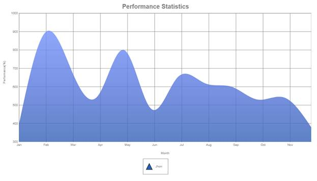

A spline Area chart is similar to an area chart with the only difference being the way in which the points of a series are connected. It connects each series of points by a smooth spline curve. The area enclosed by the chart is filled with a specified interior brush.
Multiple series can be plotted on the same chart and an alpha-blended interior color can be used on the exterior chart to make the interior chart show through.
Chart Details
|
Number of Y values per point |
1 |
|
Number of Series |
One or more |
|
Cannot be Combined with |
Pie chart. |
A spline area series can be added to the chart using the following code.
|
[C#] Series series = new Series("Jhon"); series.Type = SeriesType.SplineArea;
this.ChartAdv1.Axes["PrimaryX"].RangeType = RangeType.Set; this.ChartAdv1.Axes["PrimaryX"].ValueType = ChartAxisValueType.DateTime; this.ChartAdv1.Axes["PrimaryX"].DateFormat = "mmm"; this.ChartAdv1.Axes["PrimaryX"].Range = new MinMaxInfo() { Start= new DateTime(2010, 1, 1).ToOADate(), End= new DateTime(2010, 12, 1).ToOADate(), Interval = 31 };
this.ChartAdv1.Size = new System.Drawing.Size(1000, 600);
series.Points.Add(new DateTime(2010, 1, 1), 400); series.Points.Add(new DateTime(2010, 2, 1), 900); series.Points.Add(new DateTime(2010, 3, 1), 700);
. . .
series.Style.Border.Width = 3; series.Style.Opacity = 0.8f; this.ChartAdv1.Series.Add(series);
|
|
[VB] Dim series As Series = New Series("Jhon") series.Type = SeriesType.SplineArea
Me.ChartAdv1.Axes("PrimaryX").RangeType = RangeType.Set Me.ChartAdv1.Axes("PrimaryX").ValueType = ChartAxisValueType.DateTime Me.ChartAdv1.Axes("PrimaryX").DateFormat = "mmm" Me.ChartAdv1.Axes("PrimaryX").Range = New MinMaxInfo() With {.Start = New DateTime(2010, 1, 1).ToOADate(), .End = New DateTime(2010, 12, 1).ToOADate(), .Interval = 31}
series.Points.Add(New DateTime(2010, 1, 1), 400) series.Points.Add(New DateTime(2010, 2, 1), 900) series.Points.Add(New DateTime(2010, 3, 1), 700)
. . . series.Style.Border.Width = 3 series.Style.Opacity = 0.8F Me.ChartAdv1.Series.Add(series)
|

Figure 13: Spline Area Chart